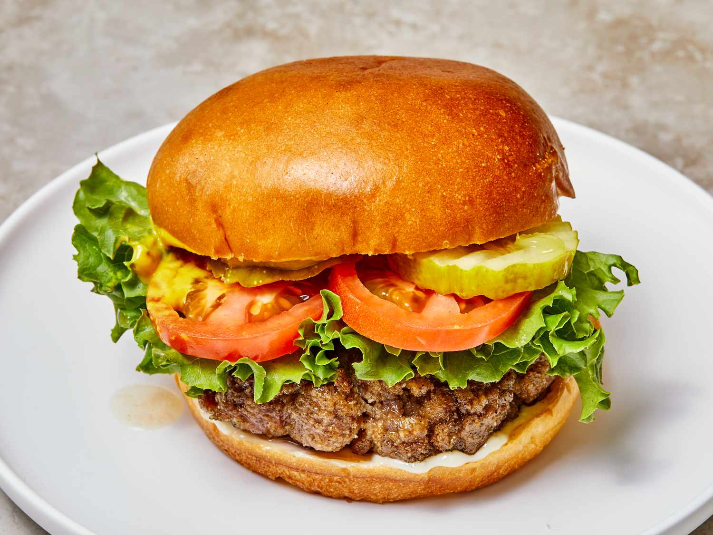

Hamburger

Description
Hamburgers require that you grill the meat to perfection and cut the veggies into even, thin slices..
Everyone in the USA loves to eat hamburger.
Ingredients
- 1 lb ground beef
- Sliced cheddar cheese
- Ketchup
- Onions
- Tomato
- Burger buns
Steps
- Form the ground beef into patties, and throw them on the grill.
- Chop tomatoes and onions into thin slices while the patties get going.
- Toast the buns, then layer cheese on top and also add on sliced veggies and a little squirt of ketchup.
- Put the patties in, and enjoy.